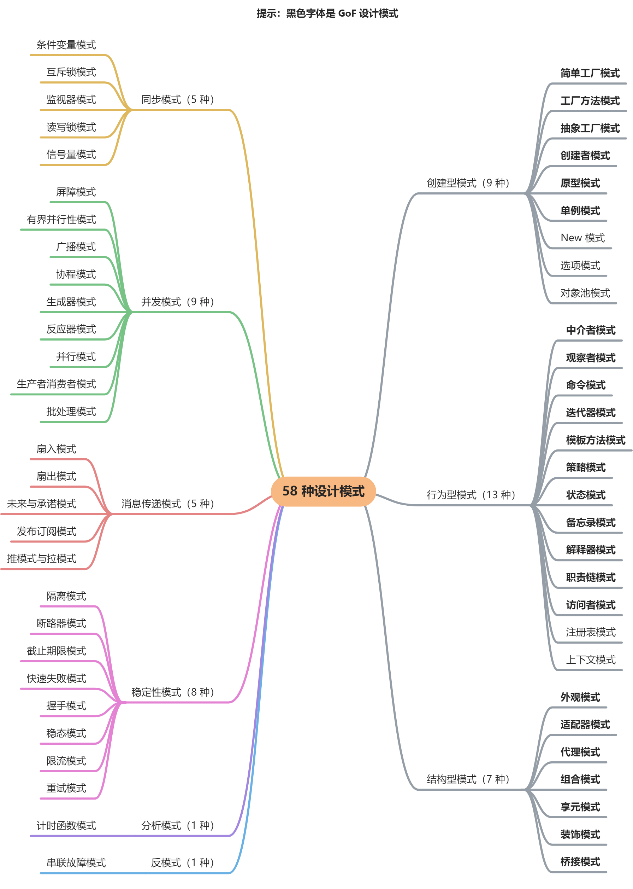
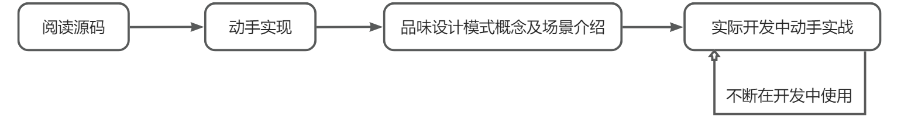
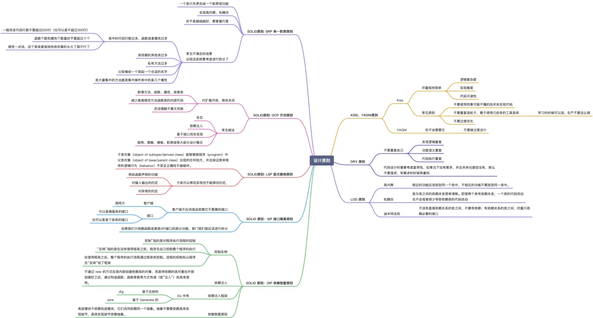

在 Go 项目开发中，我们经常会遇到各种各样的编码场景，这些场景往往重复发生，因此具有典型性。针对这些典型场景，我们可以自己编码解决，也可以采取更为省时省力的方式：直接采用设计模式。
软件开发领域，早已为常见的开发场景设计好了解决方法，也即设计模式，掌握好这些设计模式，可以提高我们的代码开发效率，并且提高我们的代码质量。所以，作为开发者，学习这些设计模式也是你生涯的必修课。
什么是设计模式？
设计模式简单来说，就是将软件开发中常见的、需要重复性解决的编码场景，按最佳实践的方式抽象成一个模型，模型描述的解决方法就是设计模式。使用设计模式，可以使代码更易于理解，保证代码的重用性和可靠性。
设计模式的存在是为了解决软件开发过程中经常遇到的一些设计问题，遵循设计模式有助于开发人员编写出更优雅、高效、易维护的代码。
设计模式不是一种具体的代码实现，而是一种通用的解决问题的思路或模式，可以帮助开发人员更好地组织和设计代码结构，你可以使用不同的语言来实现设计模式。
为什么要学习设计模式？
其实设计模式不是新的东西，在你的日常开发中，你其实都或多或少的用到了设计模式，只是你自己无感知，也不知道这些方法技巧的设计模式学名是什么。例如，在你日常开发中，你经常会使用到 NewXXX 这种方法来创建一个结构体实例，其实 NewXXX，也是一种设计模式，学名就叫 New 模式。
在一些场景下，你会使用 NewXXX 来创建一个结构体实例，而不是使用 &Worker{Name: "test"}这种方式来创建一个结构体实例。为什么呢？是因为使用 NewXXX 来创建结构体实例，可以直白的告诉开发者，要传入哪些参数来创建结构体实例，这些参数一般都是比较重要的参数，可以确保结构体实例中的方法能够正常执行。
最简单的 New 模式，都能带给我们一些开发上的收益。扩展开来，其他设计模式，也会在其所属的场景下带给我们各种类型的场景收益。
另外，设计模式是前人设计好的、针对某种场景的最佳实现思路和方法。如果我们能够根据场景选择相匹配的设计模式，那么我们不仅能够快速开发，实现场景开发需求。而且，我们开发的代码，因为符合了最佳实现方法，所以代码质量也会比较高（更简洁、更稳定、灵活易扩展），这样的代码，以后会提高功能的稳定性以及代码的可维护性。
另外，我们也可以将这些常见的开发场景，使用匹配的设计模式来开发，并且进一步封装为 Go 包，提高代码的复用度，进而提高整体的开发效率。
在我们使用设计模式的过程中，也是在学习和实战这些优秀的开发方法和具体实现，对我们个人的技术提升也会有很大的帮助。
设计模式有哪些？
在软件领域，GoF（四人帮，全拼 Gang of Four）首次系统化提出了 3 大类（创建型模式、结构型模式、行为型模式），共 24 种可复用的经典设计方案，来解决不同场景下的软件设计问题，为可复用软件设计奠定了一定的理论基础。
GoF 提出的设计模式最具代表性，但是行业中，其实还沉淀了很多其他的设计模式。这些设计模式当前并没有一个稍微官方的介绍，设计模式的概念及定义散落在互联网的各个地方。设计模式是解决某个场景的实现方法，随着软件开发技术的不断迭代发展，会有很多新场景、新技术涌现出来，设计模式自然也会越来越多，生态越来越丰富。所以，很难，也不可能给出一个设计模式全集。
本套课程，调研了很多设计模式相关的资料，并对这些设计模式进行了统一的收集和说明。以下是本套课程收集、整理后的设计模式全集（一共 58 种，未来还会不断丰富、优化课程中的设计模式）：

设计模式类型介绍如下：
- **创建型模式：**创建型模式是处理对象创建的设计模式，试图根据实际情况使用合适的方式创建对象，增加已有代码的灵活性和可复用性；
- **行为型模式：**处理对象间的通信和交互，关注对象之间的责任分配和合作；
- **结构型模式：**关注对象组合形成更大的结构，以更好地实现系统的构建和扩展；
- **同步模式：**确保多个线程或进程同步地执行，避免数据竞争和不一致性；
- **并发模式：**处理多个并发任务的方式，管理共享资源和实现任务之间的协作；
- **消息传递模式：**通过消息传递进行对象间的通信和交互，封装消息传递细节；
- **稳定型模式：**关注系统的稳定性和可靠性，确保系统在各种情况下都能正常运行；
- **分析模式：**用于分析和设计系统的模式，帮助理解系统需求和设计复杂系统；
- **反模式：**反映了常见的设计错误和反面教材，帮助开发人员避免常见的陷阱和错误。
如何学习设计模式？
学习设计模式，一定要去照着编码实现一次，至少阅读一遍源码，然后再回过头来品味文中对设计模式的概念介绍、场景介绍。只有这样，你才能理解设计模式的真正用法。
但这还不够，因为设计模式你第一次学习完在会后，很可能会忘记，在实际的工作中，遇到一些匹配的场景，也要试着用设计模式介绍的实现方式、编程方法去开发。通过实战不断的去熟悉、熟练、掌握。最终，你才能彻底掌握设计模式的概念、理解设计模式的适用场景和开发方法。
设计模式学习方法总结如下：

设计原则：SOLID 原则
在 Go 项目开发中，你经常会听到软件开发要遵循 SOLID 原则。另外，在面试过程中，也经常有面试官问到 SOLID 原则。在我的职业生涯中，就遇到过 2 个面试官问我什么是 SOLID 原则。所以，作为开发者，掌握 SOLID 原则及开发方式是一项必备的技能。
另外，在学习设计模型时，我们也需要先学习以下设计原则，这些原则会知道设计模式的实现以及我们的开发方式。
SOLID 原则介绍
SOLID 原则是由罗伯特·C·马丁在 21 世纪早期引入，指代了面向对象编程和面向对象设计的五个基本原则。遵循SOLID 原则可以确保我们设计的代码是易维护、易扩展、易阅读的。SOLID 原则同样也适用于 Go 程序设计。具体 SOLID 编码原则见下表：
| 简写 | 全称 | 中文描述 |
|---|---|---|
| SRP | The Single Responsibility Pronciple | 单一功能原则 |
| OCP | The Open Closed Principle | 开闭原则 |
| LSP | The Liskov Substitution Principle | 里氏替换原则 |
| DIP | The Dependency Inversion Principle | 依赖倒置原则 |
| ISP | The Interface Segregation Principle | 接口隔离原则 |
Single Responsibility Principle：单一功能原则
**单一功能原则：**一个类或者模块只负责完成一个职责（或功能）。
简单来说就是保证我们在设计函数、方法时做到功能单一，权责明确，当发生改变时，只有一个改变它的原因。如果函数/方法承担的功能过多，就意味着很多功能会相互耦合，这样当其中一个功能发生改变时，可能会影响其它功能。单一功能原则，可以使代码后期的维护成本更低、改动风险更低。
例如，有以下代码，用来创建一个班级，班级包含老师和学生，代码如下：
package srp
type Class struct {
Teacher *Teacher
Student *Student
}
type Teacher struct {
Name string
Class int
}
type Student struct {
Name string
Class int
}
func createClass(teacherName, studentName string, class int) (*Teacher, *Student) {
teacher := &Teacher{
Name: teacherName,
Class: class,
}
student := &Student{
Name: studentName,
Class: class,
}
return teacher, student
}
func CreateClass() *Class {
teacher, student := createClass("colin", "lily", 1)
return &Class{
Teacher: teacher,
Student: student,
}
}
上面的代码段通过 createClass 函数创建了一个老师和学生，老师和学生属于同一个班级。但是现在因为老师资源不够，要求一个老师管理多个班级。这时候，需要修改 createClass 函数的 class 参数，因为创建学生和老师是通过 createClass 函数的 class 参数偶合在一起，所以修改创建老师的代码，势必会影响创建学生的代码。
其实，创建学生的代码我们是压根不想改动的。这时候 createClass 函数就不满足单一功能原则。需要修改为满足单一功能原则的代码，修改后代码段如下：
package srp
type Class struct {
Teacher *Teacher
Student *Student
}
type Teacher struct {
Name string
Class []int
}
type Student struct {
Name string
Class int
}
func CreateStudent(name string, class int) *Student {
return &Student{
Name: name,
Class: class,
}
}
func CreateTeacher(name string, classes []int) *Teacher {
return &Teacher{
Name: name,
Class: classes,
}
}
func CreateClass() *Class {
teacher := CreateTeacher("colin", []int{1, 2})
student := CreateStudent("lily", 1)
return &Class{
Teacher: teacher,
Student: student,
}
}
上述代码，我们将 createClass 函数拆分成 2 个函数 CreateStudent 和 CreateTeacher，分别用来创建学生和老师，各司其职，代码互不影响。
Open / Closed Principle：开闭原则
**开闭原则：**软件实体应该对扩展开放、对修改关闭。
简单来说就是通过在已有代码基础上扩展代码，而非修改代码的方式来完成新功能的添加。开闭原则，并不是说完全杜绝修改，而是尽可能不修改或者以最小的代码修改代价来完成新功能的添加。
以下是一个满足开闭原则的代码段：
type IBook interface {
GetName() string
GetPrice() int
}
// NovelBook 小说
type NovelBook struct {
Name string
Price int
}
func (n *NovelBook) GetName() string {
return n.Name
}
func (n *NovelBook) GetPrice() int {
return n.Price
}
上述代码段，定义了一个 Book 接口和 Book 接口的一个实现：NovelBook（小说）。现在有新的需求，对所有小说打折统一打 5 折，根据开闭原则，打折相关的功能应该利用扩展实现，而不是在原有代码上修改，所以，新增一个 OffNovelBook 接口，继承 NovelBook，并重写 GetPrice 方法。
type OffNovelBook struct {
NovelBook
}
// 重写GetPrice方法
func (n *OffNovelBook) GetPrice() int {
return n.NovelBook.GetPrice() / 5
}
Liskov Substitution Principle：里氏替换原则
**里氏替换原则：**如果 S 是 T 的子类型，则类型 T 的对象可以替换为类型 S 的对象，而不会破坏程序。
简单来说，里氏替换原则要求子类（派生类）能够替换父类（基类）并且不影响程序的行为。也就是说，子类应该继承父类的所有属性和行为，并且可以在不改变程序逻辑的情况下进行扩展。在 Go 开发中，里氏替换原则可以通过接口来实现。
例如，以下是一个符合里氏替换原则的代码段：
type Reader interface {
Read(p []byte) (n int, err error)
}
type Writer interface {
Write(p []byte) (n int, err error)
}
type ReadWriter interface {
Reader
Writer
}
func Write(w Writer, p []byte) (int, error) {
return w.Write(p)
}
我们可以将 Write 函数中的 Writer 参数替换为其子类型 ReadWriter，而不影响已有程序：
func Write(rw ReadWriter, p []byte) (int, error) {
return rw.Write(p)
}
Dependency Inversion Principle：依赖倒置原则
**依赖倒置原则：**依赖于抽象而不是一个实例，其本质是要面向接口编程，不要面向实现编程。
以下是一个不符合依赖倒置原则的示例：
package main
import "fmt"
// 定义一个高层模块
type HighLevelModule struct {
lowLevelModule LowLevelModule
}
func (hlm HighLevelModule) DoSomething() {
hlm.lowLevelModule.DoSomething()
}
// 定义一个低层模块
type LowLevelModule struct{}
func (llm LowLevelModule) DoSomething() {
fmt.Println("Doing something in low level module...")
}
func main() {
llm := LowLevelModule{}
hlm := HighLevelModule{lowLevelModule: llm}
hlm.DoSomething()
}
在上面的示例中，HighLevelModule 依赖于 LowLevelModule，而且在 HighLevelModule 中直接实例化了 LowLevelModule。这不符合依赖倒置原则的原因是高层模块应该依赖于抽象而不是具体的实现，而且高层模块不应该直接依赖于低层模块的具体实现。
为了符合依赖倒置原则，我们可以通过将 LowLevelModule 抽象成接口，并在 HighLevelModule 中依赖于该接口，从而实现依赖倒置。以下是优化后的示例：
package main
import "fmt"
// 定义一个低层模块接口
type LowLevelModule interface {
DoSomething()
}
// 定义一个高层模块
type HighLevelModule struct {
lowLevelModule LowLevelModule
}
func (hlm HighLevelModule) DoSomething() {
hlm.lowLevelModule.DoSomething()
}
// 实现低层模块
type ConcreteLowLevelModule struct{}
func (cllm ConcreteLowLevelModule) DoSomething() {
fmt.Println("Doing something in low level module...")
}
func main() {
cllm := ConcreteLowLevelModule{}
hlm := HighLevelModule{lowLevelModule: cllm}
hlm.DoSomething()
}
在优化后的示例中，我们定义了 LowLevelModule 接口来抽象低层模块，并在 HighLevelModule 中依赖于该接口。同时，我们实现了 ConcreteLowLevelModule 结构体来实现 LowLevelModule 接口。这样就符合了依赖倒置原则，高层模块依赖于抽象接口，而不是具体的实现，降低了模块之间的耦合度。
Interface Segregation Principle：接口隔离原则
**接口隔离原则：**是指客户端不应该依赖它不需要的接口，即一个类对另一个类的依赖应该建立在最小的接口上。具体来说，接口隔离原则要求程序员尽量将臃肿庞大的接口拆分成更小的和更具体的接口，让接口中只包含客户感兴趣的方法。
以下是一个不符合接口隔离原则的示例：
package maing
import "fmt"
// 定义一个接口
type Machine interface {
Print()
Scan()
}
// 实现接口
type MultiFunctionMachine struct{}
func (mfm MultiFunctionMachine) Print() {
fmt.Println("Printing...")
}
func (mfm MultiFunctionMachine) Scan() {
fmt.Println("Scanning...")
}
func main() {
mfm := MultiFunctionMachine{}
mfm.Print()
mfm.Scan()
}
在上面的示例中，我们定义了一个 Machine 接口，包含 Print() 和 Scan() 两个方法。然后我们实现了一个 MultiFunctionMachine 结构体来实现这个接口。这个示例不符合接口隔离原则的原因是， MultiFunctionMachine 结构体实现了一个包含打印和扫描功能的接口，但是在实际使用中，可能某些设备只需要其中的一个功能，而不需要同时实现接口中的所有方法。
为了符合接口隔离原则，我们可以将 Machine 接口拆分为两个单一职责的接口，分别表示打印和扫描功能。然后根据需要实现对应的接口。以下是优化后的示例：
package main
import "fmt"
// 定义打印机接口
type Printer interface {
Print()
}
// 定义扫描仪接口
type Scanner interface {
Scan()
}
// 实现打印机
type SimplePrinter struct{}
func (sp SimplePrinter) Print() {
fmt.Println("Printing...")
}
// 实现扫描仪
type SimpleScanner struct{}
func (ss SimpleScanner) Scan() {
fmt.Println("Scanning...")
}
func main() {
sp := SimplePrinter{}
sp.Print()
ss := SimpleScanner{}
ss.Scan()
}
在优化后的示例中，我们将 Machine 接口拆分为 Printer 和 Scanner 两个单一职责的接口，分别表示打印和扫描功能。然后我们分别实现了 SimplePrinter 和 SimpleScanner 结构体来实现这两个接口，每个结构体只实现了对应的功能。这样就遵循了接口隔离原则，将接口按照单一职责进行拆分，避免了一个类需要实现不需要的方法。
总结
这里我用一张图来总结下 SOLID 原则：

KISS 原则
KISS 原则（Keep It Simple, Stupid）是软件开发中的重要原则，强调在设计和实现软件系统时应该保持简单和直观，避免过度复杂和不必要的设计。
KISS 原则的英文描述有好几个版本，比如下面这几个。
- Keep It Simple and Stupid；
- Keep It Short and Simple；
- Keep It Simple and Straightforward。
不过，仔细看你就会发现，它们要表达的意思其实差不多，翻译成中文就是：尽量保持简单。
KISS 原则是保证代码可读性和可维护性的重要手段。KISS 原则中的“简单”并不是以代码行数来考量的。代码行数越少并不代表代码越简单，我们还要考虑逻辑复杂度、实现难度、代码的可读性等。而且，本身就复杂的问题，用复杂的方法解决，并不违背 KISS 原则。除此之外，同样的代码，在某个业务场景下满足 KISS 原则，换一个应用场景可能就不满足了。
对于如何写出满足 KISS 原则的代码，有下面几条指导原则：
- 不要使用同事可能不懂的技术来实现代码
- 不要重复造轮子，要善于使用已经有的工具类库
- 不要过度优化
下面是一个使用 KISS 原则设计的简单计算器程序的示例：
package main
import "fmt"
// Calculator 定义简单的计算器结构
type Calculator struct{}
// Add 方法用于相加两个数
func (c Calculator) Add(a, b int) int {
return a + b
}
// Subtract 方法用于相减两个数
func (c Calculator) Subtract(a, b int) int {
return a - b
}
func main() {
calculator := Calculator{}
// 计算 5 + 3
result1 := calculator.Add(5, 3)
fmt.Println("5 + 3 =", result1)
// 计算 8 - 2
result2 := calculator.Subtract(8, 2)
fmt.Println("8 - 2 =", result2)
}
在上述示例中，我们定义了一个简单的计算器结构 Calculator，包含 Add 和 Subtract 方法用于实现加法和减法操作。通过简单的设计和实现，这个计算器程序清晰、易懂，符合 KISS 原则的要求。
DRY 原则
DRY 原则，全称为“Don’t Repeat Yourself”，是软件开发中的重要原则之一，强调避免重复代码和功能，尽量减少系统中的冗余。DRY 原则的核心思想是任何信息在系统中应该有且仅有一个明确的表达形式，避免多处重复定义相同的信息或逻辑。
你可能会觉得 DRY 原则非常简单、非常容易应用。只要两段代码长得一样，那就是违反 DRY 原则了。真的是这样吗？答案是否定的。这是很多人对这条原则存在的误解。实际上，重复的代码不一定违反 DRY 原则，而且有些看似不重复的代码也有可能违反 DRY 原则。
通常存在三种典型的代码重复情况，它们分别是：实现逻辑重复、功能语义重复和代码执行重复。这三种代码重复，有的看似违反 DRY，实际上并不违反；有的看似不违反，实际上却违反了。
实现逻辑重复：
type UserAuthenticator struct{}
func (ua *UserAuthenticator) authenticate(username, password string) {
if !ua.isValidUsername(username) {
// ... code block 1
}
if !ua.isValidPassword(username) {
// ... code block 1
}
// ...省略其他代码...
}
func (ua *UserAuthenticator) isValidUsername(username string) bool {}
func (ua *UserAuthenticator) isValidPassword(password string) bool {}
假设 isValidUserName() 函数和 isValidPassword() 函数代码重复，看起来明显违反 DRY 原则。为了移除重复的代码，我们对上面的代码做下重构，将 isValidUserName() 函数和 isValidPassword() 函数，合并为一个更通用的函数 isValidUserNameOrPassword()。
经过重构之后，代码行数减少了，也没有重复的代码了，是不是更好了呢？答案是否定的。单从名字上看，我们就能发现，合并之后的 isValidUserNameOrPassword() 函数，负责两件事情：验证用户名和验证密码，违反了“单一职责原则”和“接口隔离原则”。
实际上，即便将两个函数合并成 isValidUserNameOrPassword()，代码仍然存在问题。因为 isValidUserName() 和 isValidPassword() 两个函数，虽然从代码实现逻辑上看起来是重复的，但是从语义上并不重复。所谓“语义不重复”指的是：从功能上来看，这两个函数干的是完全不重复的两件事情，一个是校验用户名，另一个是校验密码。尽管在目前的设计中，两个校验逻辑是完全一样的，但如果按照第二种写法，将两个函数的合并，那就会存在潜在的问题。在未来的某一天，如果我们修改了密码的校验逻辑，那这个时候，isValidUserName() 和 isValidPassword() 的实现逻辑就会不相同。我们就要把合并后的函数，重新拆成合并前的那两个函数。
对于包含重复代码的问题，我们可以通过抽象成更细粒度函数的方式来解决。
功能语义重复：
在同一个项目代码中有下面两个函数：isValidIp() 和 checkIfIpValid()。尽管两个函数的命名不同，实现逻辑不同，但功能是相同的，都是用来判定 IP 地址是否合法的。
func isValidIp(ipAddress string) bool {
// ... 正则表达式判断
}
func checkIfIpValid(ipAddress string) bool {
// ... 字符串方式判断
}
在这个例子中，尽管两段代码的实现逻辑不重复，但语义重复，也就是功能重复，我们认为它违反了 DRY 原则。我们应该在项目中，统一一种实现思路，所有用到判断 IP 地址是否合法的地方，都统一调用同一个函数。
代码执行重复：
type UserService struct {
userRepo UserRepo
}
func (us *UserService) login(email, password string) {
existed := us.userRepo.checkIfUserExisted(email, password)
if !existed {
// ...
}
user := us.userRepo.getUserByEmail(email)
}
type UserRepo struct{}
func (ur *UserRepo) checkIfUserExisted(email, password string) bool {
if !ur.isValidEmail(email) {
// ...
}
}
func (ur *UserRepo) getUserByEmail(email string) User {
if !ur.isValidEmail(email) {
// ...
}
}
上面这段代码，既没有逻辑重复，也没有语义重复，但仍然违反了 DRY 原则。这是因为代码中存在“执行重复”。这个问题解决起来比较简单，我们只需要将校验逻辑从 UserRepo 中移除，统一放到 UserService 中就可以了。
如何提高代码复用性？
- 减少代码耦合；
- 满足单一职责原则；
- 模块化业务与非业务逻辑分离；
- 通用代码下沉；
- 继承、多态、抽象、封装；
- 应用模板等设计模式。
下面是一个简单的人员管理系统示例，使用 DRY 原则来确保代码的清晰和重用性：
package main
import "fmt"
// Person 结构体表示人员信息
type Person struct {
Name string
Age int
}
// PrintPersonInfo 打印人员信息
func PrintPersonInfo(p Person) {
fmt.Printf("Name: %s, Age: %d\n", p.Name, p.Age)
}
func main() {
// 创建两个人员信息
person1 := Person{Name: "Alice", Age: 30}
person2 := Person{Name: "Bob", Age: 25}
// 打印人员信息
PrintPersonInfo(person1)
PrintPersonInfo(person2)
}
在上述示例中，我们定义了一个 Person 结构体表示人员信息，以及一个 PrintPersonInfo 函数用于打印人员信息。通过将打印人员信息的逻辑封装在 PrintPersonInfo 函数中，遵循DRY原则，避免重复编写打印逻辑，提高了代码的复用性和可维护性。
LOD 原则
LOD原则（Law of Demeter），又称为最少知识原则，旨在降低对象之间的耦合度，减少系统中各部分之间的依赖关系。LOD原则强调一个对象应该对其他对象了解得越少越好，不应直接与陌生对象通信，而通过自己的成员进行操作。
迪米特法则法则强调不该有直接依赖关系的类之间，不要有依赖；有依赖关系的类之间，尽量只依赖必要的接口。迪米特法则是希望减少类之间的耦合，让类越独立越好。每个类都应该少了解系统的其他部分。一旦发生变化，需要了解这一变化的类就会比较少。
下面是一个使用LOD原则设计的简单用户管理系统示例：
package main
import "fmt"
// UserService 用户服务，负责用户管理
type UserService struct{}
// GetUserByID 根据用户ID获取用户信息
func (us UserService) GetUserByID(id int) User {
userRepo := UserRepository{}
return userRepo.FindByID(id)
}
// UserRepository 用户仓库，负责用户数据维护
type UserRepository struct{}
// FindByID 根据用户ID查询用户信息
func (ur UserRepository) FindByID(id int) User {
// 模拟从数据库中查询用户信息
return User{id, "Alice"}
}
// User 用户结构
type User struct {
ID int
Name string
}
func main() {
userService := UserService{}
user := userService.GetUserByID(1)
fmt.Printf("User ID: %d, Name: %s\n", user.ID, user.Name)
}
在上述示例中，我们设计了一个简单的用户管理系统，包括 UserService 用户服务和 UserRepository 用户仓库两个部分。UserService 通过调用 UserRepository 来查询用户信息，遵循了LOD原则中只与直接的朋友通信的要求。